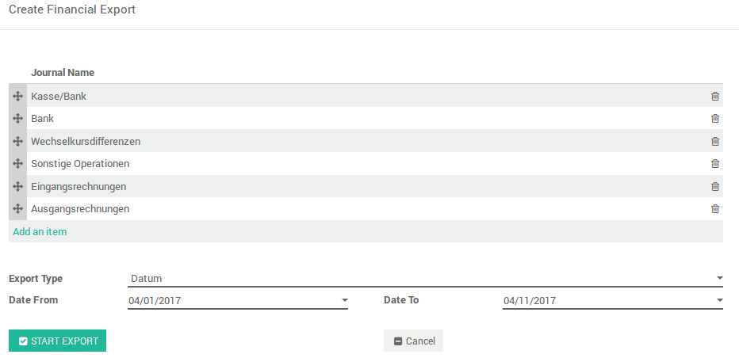
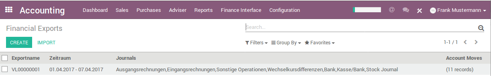

The Odoo Datev-Interface includes the export of accounting entries for customer invoices and supplier bills, bank bookings and manually created accounting entries. In addition, master data such as customer and vendor numbers, terms of payment as well as customer and delivery specifications can be transferred to Odoo. This eliminates the need to manually enter customer and delivery dates in Datev.
Create your export for various Journals in the convenient period.

The exports are stored individually and are available at any time.

Existing accounting entries are analyzed by ecoservice for an Datev-compliant import.
An 2 hours online training is part of this offer. This enables the customer to make the necessary settings independently.
The following parameters must be set:
Booking method
Booking key
Automatic accounts
Fiscal Position
More modules: